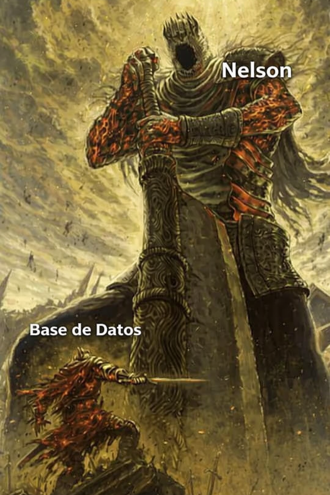

Nelson Filipe Fardilha Karlsson
Estudiante de 1º DAM en el CPIFP Alan Turing, Málaga. Alineamiento caótico neutral. Estado: leyenda.

Quién soy
Me llamo Nelson y estudio 1º DAM en el CPIFP Alan Turing de Málaga. Tengo fuerza 20, lo que significa que cuando me siento delante del ordenador este lo sabe, y si no compila a la primera le lanzo una mirada de intimidación con ventaja hasta que lo hace. Los errores de sintaxis me tienen miedo a mí, no al revés. Mi profesor imparte tanto Bases de Datos como Lenguajes de Marcas, lo que significa que domina dos escuelas de magia distintas y yo tengo que aprobar las dos. Lo cual, con mis estadísticas, es solo cuestión de tiempo.
Cómo trabajo
En el módulo de Lenguajes de Marcas aprendí que un HTML mal anidado es como un dungeon sin mapa: puedes entrar, pero no garantizo que salgas. Llevo el VS Code como arma principal y el Live Server como escudero fiel que nunca me ha abandonado en combate. Cuando algo no funciona no es un bug, es un encuentro aleatorio que no estaba en el guión. Hago una tirada de depuración, saco lo que tengo que sacar, y sigo adelante.
Este proyecto
Este es mi proyecto para Lenguajes de Marcas: una aplicación para crear personajes de D&D 5e usando la API oficial. Nunca había usado una API antes de esto y al principio la documentación me pareció un pergamino antiguo escrito en élfico. Pero con suficiente inteligencia, que tengo, y suficiente sabiduría, que voy desarrollando, conseguí dominarla. Si mi profesor está leyendo esto: todo el código está escrito con plena conciencia y los JOIN los entiendo perfectamente. Más o menos.
Ver Repositorio en GitHub